Bem vindx a mais uma aula de Contabilidade.
Hoje aprenderemos o básico sobre economia e sua importância social e na organização empresarial. Aprenderemos também sua relação com a Contabilidade.
Para melhor entender os conceitos desta aula, sugiro o material descrito nas referências bibliográficas, em especial:
BÄCHTOLD. Contabilidade Básica
DALIO, Ray. How The Economic Machine Works by Ray Dalio
OLIVEIRA & MOREIRA. Noções de Contabilidade Básica Para Cursos Técnicos
Assista, em especial, o vídeo do Ray Dalio sobre a máquina econômica, e sua versão resumida:
STUDIO 306. Como Funciona a Economia?
Vamos lá!
Sumário da Aula
- Como funciona a economia?
- A Máquina Econômica de Ray Dalio
- Contabilidade e Economia
- Resumo
- Exercícios
- Referências Bibliográficas
Como funciona a economia?
Como vimos na última aula, as Teorias de Sistema Aberto consideram as organizações como estruturas dinâmicas que interagem com diferentes influências externas. Por esta razão a solução dos diversos problemas que uma empresa pode enfrentar deve ser relativizado, levando em consideração as contingências de cada situação.
Esta relativização está relacionada ao contexto econômico desempenhado pela organização. No contexto da Teoria de Sistemas, podemos considerar a existência de 4 diferentes tipos de organização:
1) Organizações Econômicas ou Produtivas: relacionadas com o fornecimento de mercadorias e serviços, entre as quais estão as empresas, inclusive as agrícolas.
2) Organizações de Manutenção: relacionadas com a socialização e o treinamento das pessoas que irão desempenhar papéis em outras organizações e na sociedade global. Entre essas estão as escolas, qualquer que seja o seu nível, e as igrejas.
3) Organizações Adaptativas: relacionadas com a criação de conhecimentos e com o desenvolvimento de novas soluções para problemas. Entre essas estão os laboratórios e organizações de pesquisa, inclusive algumas universidades.
4) Organizações Político-Administrativas: relacionadas com a coordenação e o controle de recursos humanos e materiais. O estado, os órgãos públicos em geral, os sindicatos e os grupos de pressão estão nesse grupo.
Esta ideia de que existem diferentes “tipos de organizações“, cada uma com uma função, é uma das bases para se entender como a economia funciona.
A Máquina Econômica de Ray Dalio
Ray Dalio, famoso investidor britânico, possui uma visão simples e mecânica sobre a economia. Esta visão fez com que Dalio previsse a crise econômica de 2008 e faturasse, mesmo no auge da recessão, mais de US$ 16 bilhões.
Para ele a Economia nada mais é do que uma máquina, composta por 4 atores principais: pessoas, empresas, bancos e o Governo.

(Imagem retirada do vídeo de Ray Dalio - Todos os direitos reservados aos seus autores)
O princípio básico por trás da máquina econômica de Dalio são as transações. Toda vez que um comprador adquire um produto, serviço ou ativo financeiro de um vendedor, por meio de dinheiro ou crédito, ocorre uma transação.
Desde o pão que compramos na padaria, até os mais complexos investimentos no mercado de ações - todas essas atividades são consideradas transações econômicas.
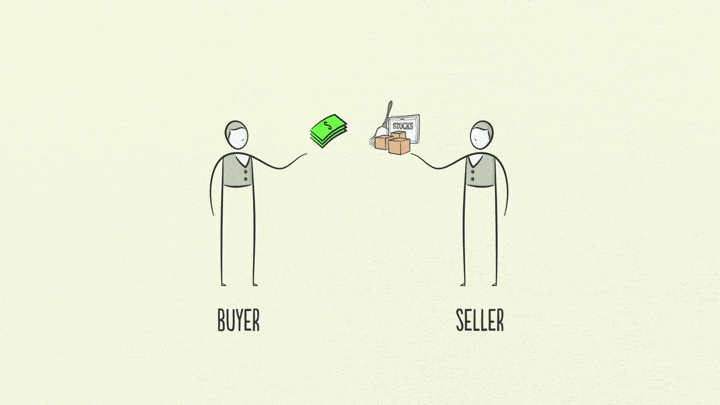
(Imagem retirada do vídeo de Ray Dalio - Todos os direitos reservados aos seus autores)
“Todos os ciclos e todas as forças de uma economia são guiadas por transações. Então, se pudermos entender transações podemos entender toda a economia!“ (DALIO, 2013)
Continuando com o exemplo da padaria, na visão de Dalio, para entendermos a economia, devemos pensar em todas as padarias existentes, ou seja, no mercado das padarias.
Um mercado consiste em todos os compradores e vendedores fazendo transações pela mesma coisa (produto, serviço ou ativo): há mercados de trigo, automóveis, alimentos, ações, e, claro, padarias.
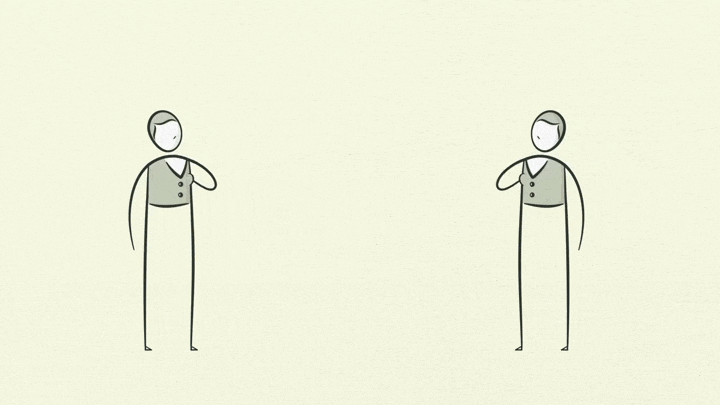
(Imagem retirada do vídeo de Ray Dalio - Todos os direitos reservados aos seus autores)
A própria Economia, por sua vez, é o conjunto de todas as transações de todos os mercados que existem. Embora pareça complexa à primeira vista, um economia é apenas a soma de diversas transações acontecendo ao mesmo tempo.

(Imagem retirada do vídeo de Ray Dalio - Todos os direitos reservados aos seus autores)
Preços
Um importante conceito envolvido em qualquer Teoria Econômica é a Lei da Oferta e Demanda e sua relação com o preço dos produtos.
A demanda representa a quantidade de bens ou serviços que as pessoas estão dispostas a comprar de um vendedor a um preço específico. Quanto maior o preço, menos pessoas vão querer comprar, chegando a um ponto em que simplesmente se recusarão a comprar.
De modo análogo, a oferta indica a quantidade de bens ou de serviços fornecidos por um vendedor a determinado preço. Quanto menor o preço, menos bens o vendedor desejará vender, pois, para produzi-los, despende dinheiro e tempo.
Se considerarmos, a exemplo, as vendas de uma barra de chocolate em uma loja de doces, poderíamos montar uma tabela como a mostrada abaixo.
Produto: Barra de Chocolate ao Leite 250g da Marca XYZ
| Preço da Barra | Quantidade em Estoque (mês) | Quantidade de Pedidos (mẽs) |
|---|---|---|
| R$ 3,00 | 325 | 600 |
| R$ 3,50 | 350 | 550 |
| R$ 4,00 | 425 | 500 |
| R$ 4,50 | 450 | 450 |
| R$ 5,00 | 525 | 400 |
| R$ 5,50 | 550 | 350 |
| R$ 6,00 | 625 | 300 |
Neste exemplo, pode-se perceber que:
1) Quanto maior o preço, menor a quantidade de pedidos;
2) Há um preço de equilíbrio em que a quantidade do produto em estoque (oferta) é igual (ou o mais próximo possível) da quantidade de pedidos (demanda).
O segredo da economia é que, na verdade, os preços raramente estão em equilíbrio. O preço dos chocolates tendem a aumentar antes da Páscoa pois existe uma maior demanda. Da mesma forma, o preços destes produtos caem logo após as datas festivas pois a demanda diminui. Esta variação de preços recebe o nome de sazonalidade ou ruído.
O preço de equilíbrio de um produto qualquer depende da quantidade deste no estoque de em vendedor (oferta) e o preço que as pessoas estão dispostas a pagar (demanda).
Pensando no exemplo da Páscoa, podemos analisar a sazonalidade no preço de uma barra de 250g de chocolate, por exemplo.
Produto: Barra de Chocolate ao Leite 250g da Marca XYZ
| Mês | Preço da Barra | Quantidade em Estoque (mês) | Quantidade Vendida (mẽs) |
|---|---|---|---|
| Janeiro | R$ 4,00 | 200 | 110 |
| Fevereiro | R$ 4,50 | 250 | 160 |
| Março | R$ 4,75 | 450 | 320 |
| Abril | R$ 5,50 | 570 | 430 |
| Maio | R$ 4,50 | 200 | 100 |
| Junho | R$ 4,50 | 250 | 115 |
| Julho | R$ 4,00 | 300 | 160 |
| Agosto | R$ 4,20 | 200 | 130 |
| Setembro | R$ 4,30 | 230 | 110 |
| Outubro | R$ 4,50 | 180 | 090 |
| Novembro | R$ 4,20 | 220 | 120 |
| Dezembro | R$ 4,20 | 330 | 150 |
Representando graficamente estes dados, podemos perceber, claramente, algumas coisas:
1) O preço das barras, bem como a quantidade vendida, tende a aumentar antes da Páscoa (Abril);
2) O preço das barras caí após a Páscoa;
3) No decorrer do ano, excetuando a Páscoa, conforme o preço da barra de chocolate aumenta, a quantidade vendida diminui.
No exemplo acima, o preço de equilíbrio é mais difícil de ser percebido, porém, nas próximas aulas iremos aprender como calculá-lo.
Ocasionalmente, oferta e demanda podem se adaptar às mudanças nos preços rapidamente ou lentamente.
Se uma loja de doces aumenta o preço da barra de chocolate, as pessoas tendem a comprar menos barras em um curto período de tempo (exceto nos períodos sazonais) ou procurar um lugar onde elas estejam mais baratas. Em termos econômicos, sua demanda é elástica – altera-se com as mudanças nos preços.
Em outros casos, os consumidores reagem lentamente a mudanças de preços – são inelásticos a preços. Um exemplo importante é a variação nos preços das passagens dos ônibus. Quando as passagens aumentam, os usuários tendem a, inicialmente, manterem utilizado os mesmos transportes (e muitos acabam não tendo outra opção a não ser pagar mais caro). No entanto, com o tempo, outros usuários podem encontrar alternativas (**substituições), como vans, metrô ou carros populares.
Concluindo: o preço de um produto varia com o tempo (sazonalidade), dependendo da oferta e demanda do mesmo no mercado.
Crédito e Empréstimos
Além das transações, outro fator importante do modelo de Ray Dalio é o crédito.
Devemos lembrar que, para Dalio, toda a base da economia está nas transações. Toda transação precisa, pem algum momento, ser quitada, ou seja, paga: se você compra um produto (mesmo que a prazo) você deve pagar por ele.
Caso dependêssemos apenas do dinheiro físico como forma de pagamento, a única maneira que teríamos para aumentar nosso consumo (excetuando, pelo amor de Deus, práticas ilícitas) seria tendo mais dinheiro - e para ter mais dinheiro precisaríamos trabalhar mais e ser mais produtivos (aqui volta o conceito do Homo economicus).
Os economistas possuem algumas métricas para analisar o crescimento de produtividade. A principal (e mais utilizada) é a Renda per capita.
Utilizando as fantásticas ferramentas feitas por Hans Rosling e sua equipe do Gapminder podemos analisar graficamente diversos parâmetros estatísticos dos países no decorrer dos anos.
Analisando a renda per capita de alguns países nos últimos 210 anos, percebe-se que a produtividade tem aumentado. Com isso aumenta também o consumo.
No entanto outro fator que está diretamente relacionado ao consumo é o crédito.
Crédito nada mais é do que uma relação de confiança financeira entre um consumidor (devedor) e uma instituição financeira (credor). Em resumo: um banco empresta dinheiro para um cliente que deverá pagá-lo, com juros, após um período de tempo.
Empréstimos, cartões de crédito e financiamentos são alguns dos tipos de crédito que existem no mercado - e todos eles se baseiam na reputação financeira do devedor. Esta reputação está baseada na probabilidade do devedor não pagar a sua dívida com o credor.
É por isso que existem empréstimos e créditos especiais para funcionários públicos, aposentados e pensionistas (pois estes clientes tendem a pagar suas contas em dia) da mesma maneira que pode ser difícil para uma pessoa jovem e desempregada conseguir fazer um cartão de crédito (pois a possibilidade da pessoa não pagar a fatura é alta).
Crédito e Consumo
O crédito funciona como um empréstimo. Desta forma ele permite aumentar o consumo das pessoas a curto e médio prazo. A longo prazo, no entanto, a situação é diferente (logo veremos porquê).
Apesar de ser uma importante parte da economia, o crédito ainda é bastante mal-compreendido. Parte desta confusão vêm de sua própria natureza: o crédito pode surgir espontâneamente, do nada.
Imagine que você vá até um bar para comprar uma bebida (se você for menor de 18 anos ou de exatas, considere que você foi comprar um Toddynho). Esta transação será considerada concluída quando você tiver pago, em dinheiro, o dono do bar.
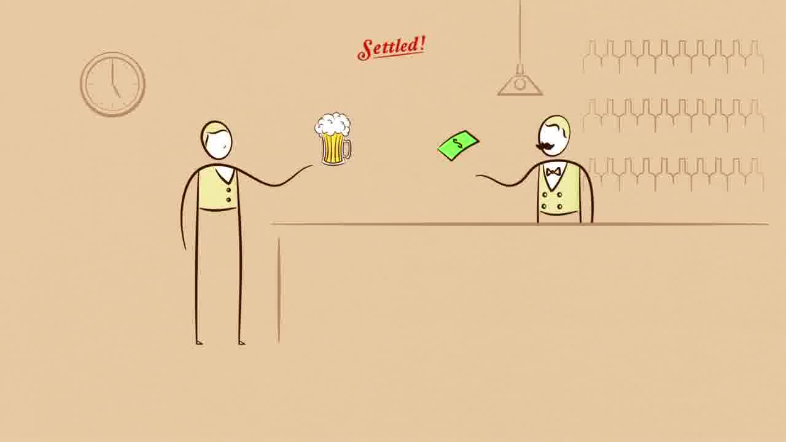
(Imagem retirada do vídeo de Ray Dalio - Todos os direitos reservados aos seus autores)
Como nossa economia tem as opções de empréstimo e crédito, você poderia levar sua bebida seu Toddyinho para casa e só depois de um tempo pagar o dono do Bar.
Esta opção de crédito não precisa estar relacionada diretamente ao cartão de crédito. Caso você comprasse o seu produto “fiado“ e, futuramente, pagasse a sua dívida, você também estaria utilizando-se do crédito.
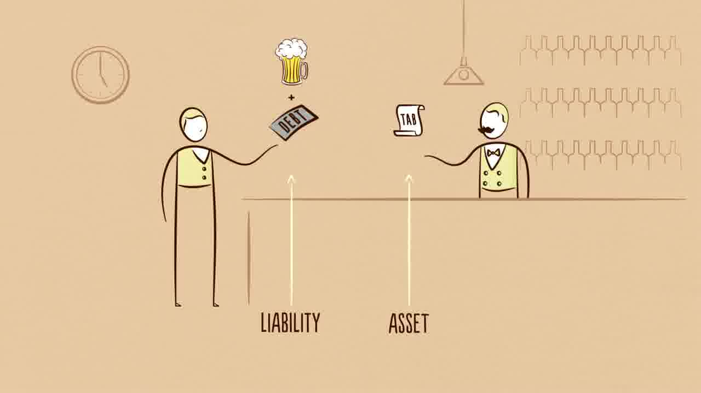
(Imagem retirada do vídeo de Ray Dalio - Todos os direitos reservados aos seus autores)
Toda vez que o crédito é criado ele irá gerar 2 produtos diferentes: o crédito e o débito.
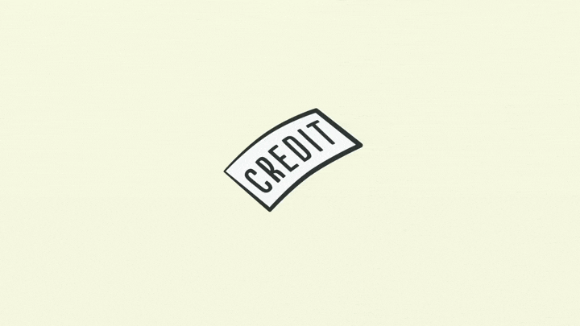
(Imagem retirada do vídeo de Ray Dalio - Todos os direitos reservados aos seus autores)
Para o devedor, aquela transação gerou um débito, ou seja, uma obrigação financeira que deverá ser paga no futuro. Já para o credor aquela mesma transação gerou um crédito, ou seja, um direito de que ele irá receber o dinheiro emprestado, acrescido ou não de juros, no futuro.
Quando o devedor pagar em dinheiro seu débito com o credor a transação será finalizada, e o crédito/débito deixará de existir.
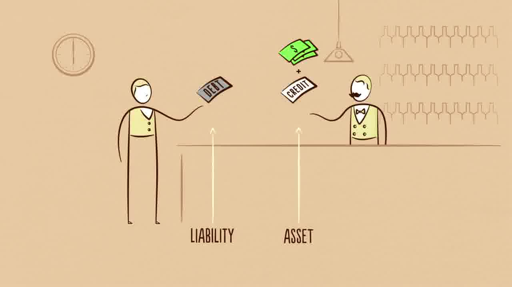
(Imagem retirada do vídeo de Ray Dalio - Todos os direitos reservados aos seus autores)
Por outro lado, caso o devedor dê um calote no seu credor e não pague a sua dívida, aquela relação de confiança criada no início do processo será quebrada, e com isso o devedor será negativado no mercado, tornando muito mais difícil que ele consiga outro empréstimo ou crédito. Do ponto de vista do credor, ele sairá lesionado nesta situação e poderá até mesmo recorrer a meios jurídicos para recuperar o seu dinheiro!
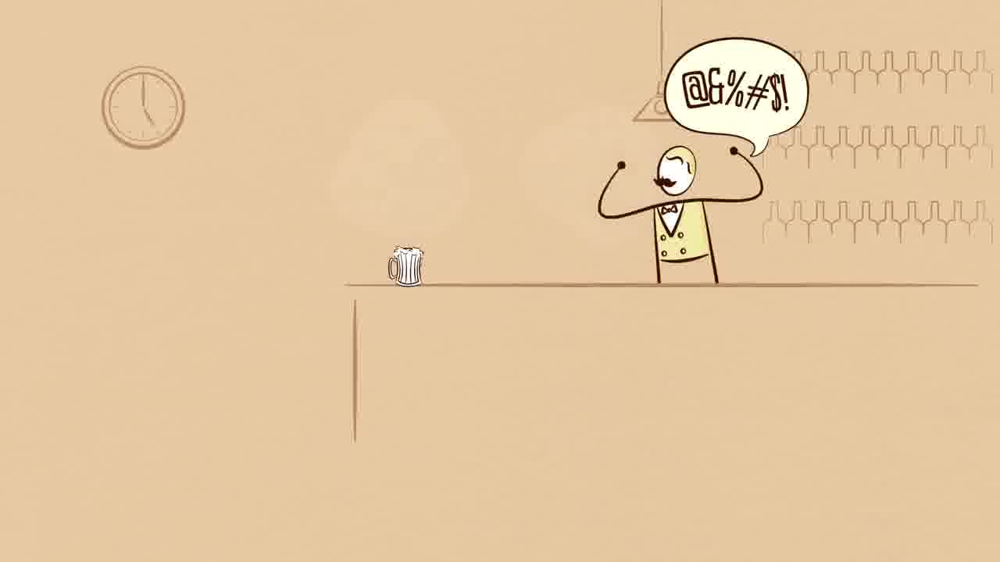
(Imagem retirada do vídeo de Ray Dalio - Todos os direitos reservados aos seus autores)
É importante perceber, acima de tudo, que o crédito significa uma maneira de se aumentar o consumo, gerar mais transações e com isso manter a economia funcionando.
No entanto, para que os créditos não se tornem apenas uma infinidade de calotes financeiros, o devedor deverá quitar suas dívidas. Isto significa que, em algum momento no futuro ele deverá utilizar parte do seu dinheiro para pagar sua dívida. Com isso ele terá menos dinheiro físico para utilizar, e com isso poderá recorrer novamente ao crédito.
(Imagem retirada do vídeo de Ray Dalio - Todos os direitos reservados aos seus autores)
Não pense, no entanto, que o crédito é algo ruim! O próprio Ray Dalio afirma que este recurso deve ser utilizado para aumentar nossa capacidade de gerar valor -ou seja, aumentar nossa renda.
Isto significa que utilizar o crédito para comprar um TV de Tela Plana 4K Full-HD 3D pt-br vinda de Marte, que fala árabe e leva seu cachorro para passear pode não ser uma escolha tão boa quanto comprar um trator (ou utilizar o crédito para pagar as parcelas de um curso ou faculdade), já que este segundo exemplo irá ampliar sua capacidade de gerar renda a médio ou longo prazo!
Repare que esta série de eventos constitui um ciclo! Quanto mais crédito alguém utilizar no presente, menos dinheiro ele terá no futuro (já que precisa pagar suas dívidas) e com isso ele poderá recorrer novamente ao crédito.
Inflação, Deflação e Crises
Todos os ciclos de inflação, deflação, crises e booms econômicos surgem deste fenômeno cíclico! Quanto mais pessoas estiverem devendo seus credores, menos eles vão querem emprestar e com isso menos crédito terá disponível no mercado.
Este primeiro impacto do crédito na economia a curto prazo recebe o nome de Ciclo de Dívida de Curto Prazo. Este nome pomposo apenas indica que inicialmente, quando há crédito disponível no mercado, a economia têm uma expansão, ou seja, há muitas transações acontecendo - logo, há mais pessoas comprando coisas e gerando renda.
Por um lado, essa expansão da economia (graças à Lei da Oferta e Demanda) leva a um aumento de preços, pois as pessoas estão dispostas a pagar mais pelos bens e serviços. Esse aumento de preços é a famosa inflação.
Lembra-se que para Ray Dalio a economia nada mais é do que uma máquina, composta por pessoas, empresas, bancos e o Governo.
O Governo desempenha um importante papel na Economia, pois ele o maior comprador e vendedor. Primeiramente, é importante lembrar que o Governo é composto por 2 importantes partes: o Governo Central (que coleta impostos e gasta MUITO dinheiro) e o Banco Central (que imprime dinheiro novo e controla as taxas de crédito).
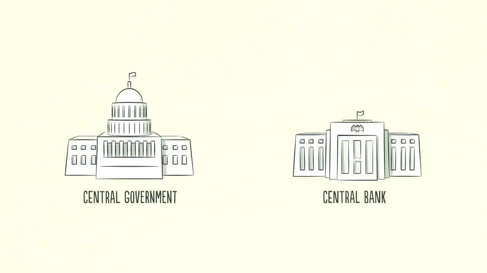
(Imagem retirada do vídeo de Ray Dalio - Todos os direitos reservados aos seus autores)
Quando a inflação econômica sobe, o Governo aumenta as taxas de juros (no Brasil essa taxa é a SELIC) e, com isso, menos pessoas irão pedir empréstimos (crédito) e mais pessoas passarão a dever seus credores (pois elas não terão mais tanto dinheiro ou crédito para gastar).
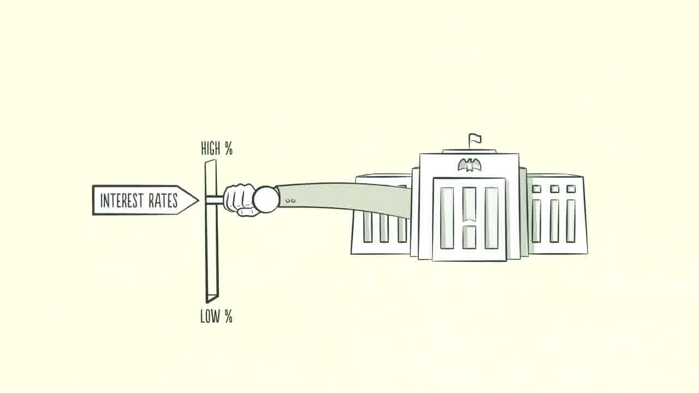
(Imagem retirada do vídeo de Ray Dalio - Todos os direitos reservados aos seus autores)
Quando as pessoas compram menos, os preços caem: isto é deflação. Apesar de parecer, a princípio uma coisa boa (pois os produtos ficam mais baratos), as deflações criam recessão econômica, pois, lembre-se: não há crédito disponível no mercado, e mesmo com os preços mais baixos as TAXAS DE JUROS ainda estão altas!
Para resolver o problema e tirar a economia da recessão, o Banco Central baixa as taxas de juros. Com isso, em pouco tempo, a economia passará por outra expansão.
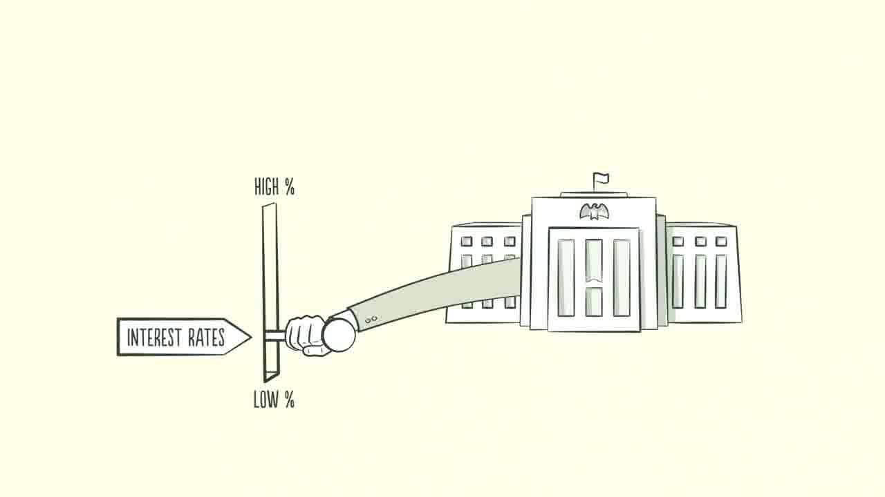
(Imagem retirada do vídeo de Ray Dalio - Todos os direitos reservados aos seus autores)
O Ciclo de Dívida de Curto Prazo ocorre, entre uma expansão e outra (ciclo completo), a cada 5 a 8 anos e sempre se repete, por décadas.
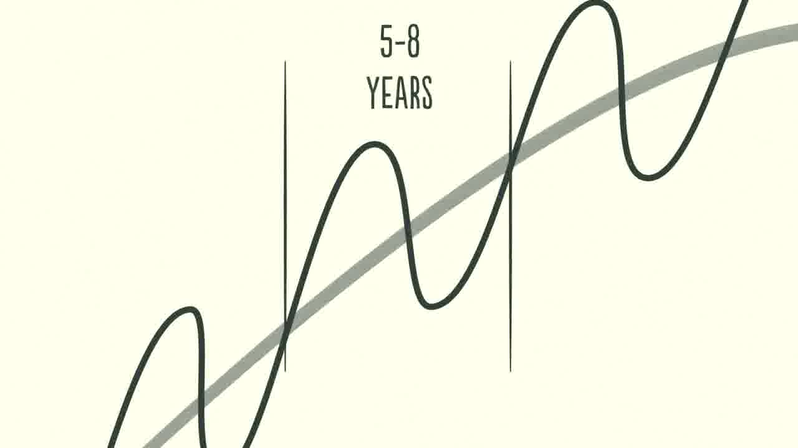
(Imagem retirada do vídeo de Ray Dalio - Todos os direitos reservados aos seus autores)
É importante avisar que, entre um ciclo e outro há crescimento econômico: o PIB aumenta, as taxas de desemprego tendem a diminuir, e tudo parece funcionar bem. No entanto, nesse ciclo dos empréstimos e crédito, as pessoas tendem a pegar mais e mais empréstimos ao invés de quitar as suas dívidas.
Com isso, a longo prazo, a situação muda: as dívidas crescem mais do que as rendas: entra em ação o Ciclo de Dívida de Longo Prazo, que estudaremos em outra aula.
Por ora, é importante pensar nos seguintes pontos:
1) A economia funciona a partir de transações, que criam mercados.
2) Crédito e empréstimos permitem que mais transações aconteçam e, com isso, a economia se aqueça a curto prazo.
3) De tempos em tempos o Governo, por meio do Banco Central, deve intervir na economia para controlar as taxas de juros.
Contabilidade e Economia
O 1º Congresso Brasileiro de Contabilidade, que aconteceu de 17 a 24 de agosto de 1924, aprovou como oficial, a seguinte definição para a contabilidade:
“É a ciência que estuda e pratica as funções de orientação, controle e registro relativo aos atos e fatos da administração econômica”.
A Contabilidade busca entender a dinâmica de funcionamento das empresas para ajudar seus gestores a tomar decisões e traçar objetivos para a entidade. Isso significa que é com as ferramentas contábeis que podemos conhecer a real situação de uma empresa e até mesmo prever o seu futuro.
Entender as dinâmicas de funcionamento do mercado, bem como os eventos econômicos de cada momento (desvalorização, inflação, deflação, crises…) são essenciais para uma boa análise contábil.
Todas as empresas nascem com uma finalidade. A grande maioria das empresas visa resultados financeiros; outras buscam resultados sociais; outras buscam expansão. Mas no final, todas buscam atingir os objetivos traçados.
A contabilidade é indispensável para que a empresa realize negócios, por exemplo, com órgãos governamentais (por meio de contratos e licitações), ou com os bancos, com fornecedores, etc (BÄCHTOLD, 2012).
A própria expansão e continuidade das empresas dependem das análises contábeis: Nos últimos anos, o SEBRAE (Serviço Brasileiro de Apoio às Micro e Pequenas Empresas) vem realizando pesquisas para detectar o índice de mortalidade (fechamento) das empresas no primeiro ano de vida (abertura). Na mais recente pesquisa, os números apontavam que cerca de 48% dos negócios são fechados antes de completar 12 meses de funcionamento.
A principal causa desta mortalidade é a falta de planejamento e controle dos negócios. Em suma, é a falta de Contabilidade. (BÄCHTOLD, 2012).
Resumo
E economia é composta por pessoas, empresas, bancos e o Governo e funciona de modo mecânico.
A base de toda a máquina econômica de Ray Dalio são as transações: toda vez que um comprador adquire um produto, serviço ou ativo financeiro de um vendedor, por meio de dinheiro ou crédito, ocorre uma transação.
Um mercado consiste em todos os compradores e vendedores fazendo transações pela mesma coisa (produto, serviço ou ativo): há mercados de trigo, automóveis, alimentos, ações, e, claro, padarias.
A própria Economia, por sua vez, é o conjunto de todas as transações de todos os mercados que existem. Embora pareça complexa à primeira vista, um economia é apenas a soma de diversas transações acontecendo ao mesmo tempo.
Os preços dos produtos ou serviços envolvidos nas transações seguem a Lei da Oferta e Demanda:
Os preços raramente estão em equilíbrio, pois apresentam variações chamadas de sazionalidades ou ruídos. Estas variações incentivam ou reprimem os consumidores a comprarem, o que pode levar a inflação e crises econômicas.
Crédito e empréstimos são acordos de confiança financeira feitos entre devedores e credores. Estes empréstimos permitem que mais transações aconteçam e, com isso, a economia se aqueça a curto prazo.
De tempos em tempos o Governo, por meio do Banco Central, deve intervir na economia para controlar as taxas de juros.
Exercícios
Qual é o preço de equilíbrio da barra de chocolate apresentada na primeira tabela?
Explique o que é o crédito dos cartões de crédito.
Dê exemplos da boa e má utilização do crédito por pessoas e empresas.
Explique as relações entre a contabilidade e a economia.
Referências Bibliográficas
BACARJI, Alencar Garcia. Formação Incial e Continuada Auxiliar Administrativo. Curitiba: Instituto Federal do Paraná, 2012. Disponível em https://bit.ly/2vZG4Y5. Acesso en 20 de mar. de 2020.
BÄCHTOLD, CIRO. Contabilidade Básica. Curitiba: Instituto Federal do Paraná, 2012.Disponível em https://bit.ly/342pLX5. Acesso en 20 de mar. de 2020.
DALIO, R. A Template for Understanding How the Economic Machine Works and How it is Reflected Now. Westport: BRIDGETWATER, 2011
GULLO, J. Administração: Para quem estuda, ensina e pratica. São Paulo, Bom Dia, 2006. 147 p
MOTTA, F. C. P. A teoria geral dos sistemas na teoria das organizações. Rev. adm. empres., São Paulo , v. 11, n. 1, p. 17-33, Mar. 1971 . Disponível em http://www.scielo.br/scielo.php?script=sci_arttext&pid=S0034-75901971000100003&lng=en&nrm=iso. Acesso en 03 de abr. de 2020.
OLIVEIRA, M. S. de; MOREIRA, S C. Noções de contabilidade básica para cursos técnicos. Brasília, DF : Instituto Federal de Educação, Ciência e Tecnologia de Brasília, 2012. 120p.
OLIVO, Ana Maria; BOSCHILIA, Luiz. Contabilidade geral e gerencial: conceitos introdutórios para os cursos superiores de tecnologia. Florianópolis: Publicações do IF-SC, 2012. 102 p. : il.
RENNÓ, R. Administração Geral para Concursos. Rio de Janeiro, Elsevier, 2013.